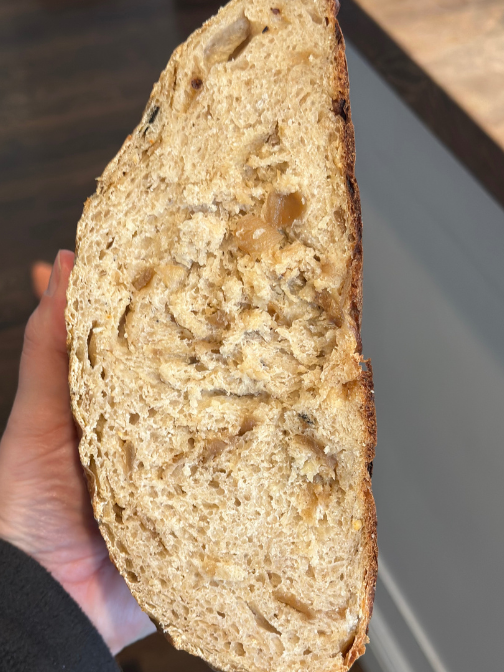
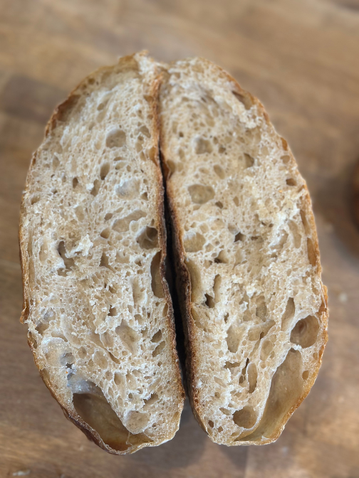

Learn how to make the easiest homemade sourdough bread recipe perfect
for beginners. All you need is a few ingredients, some time, and patience.
You’ll never want to go back to store-bought bread again. So today I’m going to show you step-by-step how to make an easy sourdough bread perfect for a beginner. Walking you through how you will know when your starter is ready to use, common terms
(so you don’t feel lost in the gibberish), shaping, and everything else in between.
What is sourdough bread?
Sourdough bread is a fermented bread that uses natural wild yeast from the environment that has been captured to rise and ferment, rather than relying on commercial yeast.
Image of sourdough loaf

Sourdough Health Benefits
As the grain is fermented, the gluten and phytic acid are broken down, making it easier to digest and more nutritious. Those who are sensitive to gluten (not celiac) may be able to tolerate sourdough products (especially long fermented), due to the fermentation of the grains.
Phytic acid (that is naturally present in wheat), is an anti-nutrient that blocks absorption of the nutrients found in wheat. During the fermentation, this gets broken down and the nutrients are more bio-available to the body.
Tips
You will need a very active sourdough starter that passes the float test.
The dough may seem dry when it is first coming together. Resist adding more water. Use wet hands during the stretching and folding if the dough is too sticky.
The amount of time it takes for your dough to double can be determined by many environmental factors, such as the temperature in your home, the maturity of your starter, and the hydration status of the loaf.
The most accurate way to create consistent results is by using a kitchen scale. I’ve included both gram measurements and cup measurements in the recipe.
Inclusions
Once you’ve gotten comfortable with the basics of sourdough, it’s fun to experiment with
flavor inclusions to customize your loaves. Popular add-ins include roasted garlic for a soft,
sweet-savory twist, or shredded cheeses like cheddar or Gruyère to create a rich, melty texture.
Fresh or dried herbs—such as rosemary, thyme, or basil—add aromatic depth, while jalapeños can
bring a spicy kick, especially when paired with cheese. For a Mediterranean flair, try mixing in
chopped olives or sun-dried tomatoes. Caramelized onions are another delicious option, offering
a sweet-savory punch that pairs beautifully with the tang of sourdough. When adding inclusions,
be sure to fold them into the dough during the final stretch and fold phase, and avoid overly
wet ingredients that might affect the dough’s structure. These additions are a great way to make your sourdough loaves truly your own.
start of recipe article
header for recipe
Basic Sourdough Loaf Recipe
A sourdough bread perfect for beginners. This delicious recipe has a soft chewy crumb
and crusty exterior. All you need is a few ingredients, some time, and patience.
Prep: 2 hours
Cook: 1 Hour
Additional Time: 19 Hours
Servings:12
Image of sourdough loaf

Supplies
Ingredients
Instructions:
In a large bowl, mix 60 grams of bubbly, active sourdough starter with 340 grams of water,
10 grams salt and 500 grams bread flour. Mix together with a wooden spoon, a dough whisk or your hands until a shaggy dough forms and all the flour is incorporated
Cover the dough and set in a warm 76ºF place for 10-12 hours. During this time the dough will strengthen, rise and double in size.
Once the dough has doubled in size, dump it on a clean countertop. Use lightly damp hands and a bench scraper (if desired) to shape the dough into a round ball by gently dragging the dough on the counter, one hand on each side, as you shape it. The dough may be a little bit sticky, that is normal. Place the dough ball on a piece of parchment paper.
Cover the dough with plastic wrap or a larger kitchen bowl upside down on top of the dough. Let rise for 1-2 hours until relaxed and puffed up.
Place a Dutch oven into your oven. Preheat the oven and Dutch oven to 500ºF for 20 minutes. Score the top of your bread with a sharp knife with one or two slashes.
Take the dutch oven out of the oven. Warning: This is a very HOT dutch oven. Keep those oven mitts on and be very careful not to burn yourself. Take the top off the dutch oven and place the dough and parchment paper into the dutch oven. Place the top back on the dutch oven and close the oven door. Immediately decrease the baking temperature to 450ºF and bake for 25 minutes. After 25 minutes, take the top off the dutch oven and continue baking for 20 more minutes. The internal temperature of the bread should be 205ºF when finished baking.
Pull the bread out of the oven and place on a cooling rack. Wait until cool to cut into it. Enjoy!